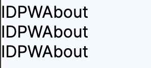

vue.js 공식문서, GPT를 통해 학습한 내용을 정리합니다.
잘못된 내용을 포함하고 있을 수 있습니다.
#v-for
v-for 문법을 사용하면 반복되는 HTML 컴포넌트를 마치 일반 프로그래밍 언어의 For문을 사용하듯 반복할 수 있다.
예시로 아래와 같이 동일한 div 태그 컴포넌트가 3개 반복되는 구조가 있다고 가정해 보자.
<div>
<a>ID</a>
<a>PW</a>
<a>About</a>
</div>
<div >
<a>ID</a>
<a>PW</a>
<a>About</a>
</div>
<div>
<a>ID</a>
<a>PW</a>
<a>About</a>
</div>
이를 vue.js의 v-for 문법을 사용하면 아래와 같이 한 개의 div Tag로 축약이 가능하다.
(출력 결과는 동일하다.)
<!-- v-for="변수명 in 반복횟수" :key="변수명" -->
<div v-for="ID in 3" :key="ID">
<a>ID</a>
<a>PW</a>
<a>ABOUT</a>
</div>
v-for 문법의 사용형식은 다음과 같다.
v-for="변수명 in 반복횟수" :key="변수명"
#객체순회
단순히 태그를 반복하는 것뿐만 아니라 반복 횟수 부분에 반복 가능한 변수 (Array, Object) 자료형을 넣어서 데이터 내부의 자료를 순차적으로 출력하는 것 또한 가능하다.
Composition API 방식으로 script 태그 내부에 출력할 contents 배열을 선언해 주었다.
<script setup>
import { ref } from 'vue'
// 데이터를 객체 형식으로 정의
const contents = ref([
'ID', 'PW', 'About'
])
</script>
다음으로 <template> Tag 내부에 v-for 문법을 사용해 contents 내부 데이터를 순차적으로 화면에 출력한다.
<a v-for="content in contents" :key="content">{{content}}</a>
객체 내부의 데이터를 출력할 때 v-for 문법 형식은 아래와 같다.
v-for "변수명 in 객체,배열 이름" :key="변수명"
#:key
"객체, 배열 내부에 중복되는 변수가 없다면" :key 뒤에 변수명과 순회할 변수명은 통일시켜 주는 것을 권장한다.
굳이 왜 :key를 적어 주어야 하는지 의문이 생길 수 있는데
vue.js는 DOM을 렌더링시 가상 DOM (Virtual DOM) 방식을 사용한다.
만약 :key가 없으면 항목의 순서만 보고 비교를 시도한다.
그렇기에 :key를 별도로 명시해 주지 않으면 예상치 못한 렌더링 결과가 생길 수 있기에 적어주도록 하자